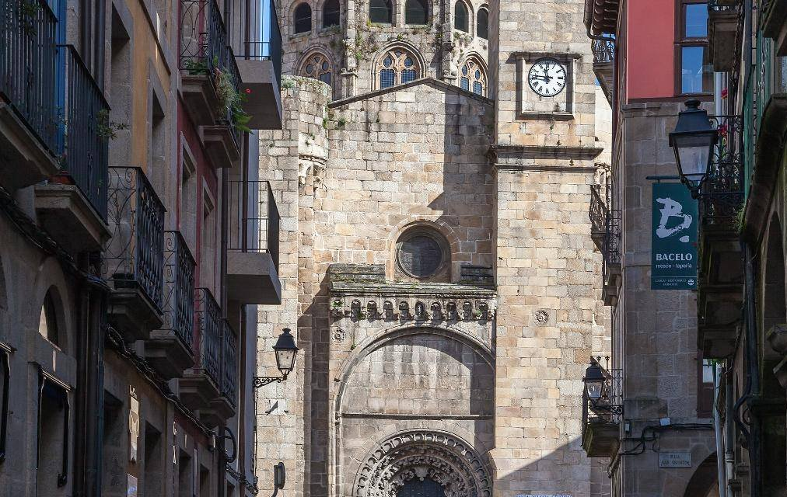
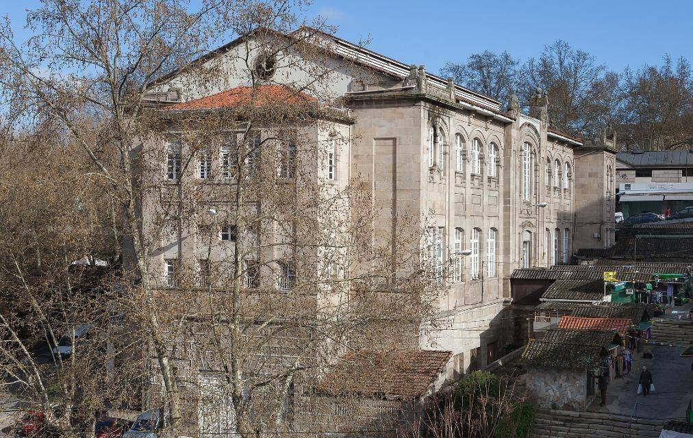

Lugares a visitar cerca del piso
Todo esto está en el casco viejo de Ourense, a pocos minutos andando del piso.
1. Praza Maior
2. Catedral de San Martiño y Pórtico del Paraíso
3. Praza dos Suaves
4. Praza do Ferro y zona de vinos
5. Rúa de San Miguel y zona de vinos

Foto: Luis Miguel Bugallo Sánchez (CC BY-SA 4.0), Wikimedia Commons
6. As Burgas
7. Iglesia de Santa Eufemia
8. Praza de Abastos

Foto: Luis Miguel Bugallo Sánchez (CC BY-SA 4.0), Wikimedia Commons